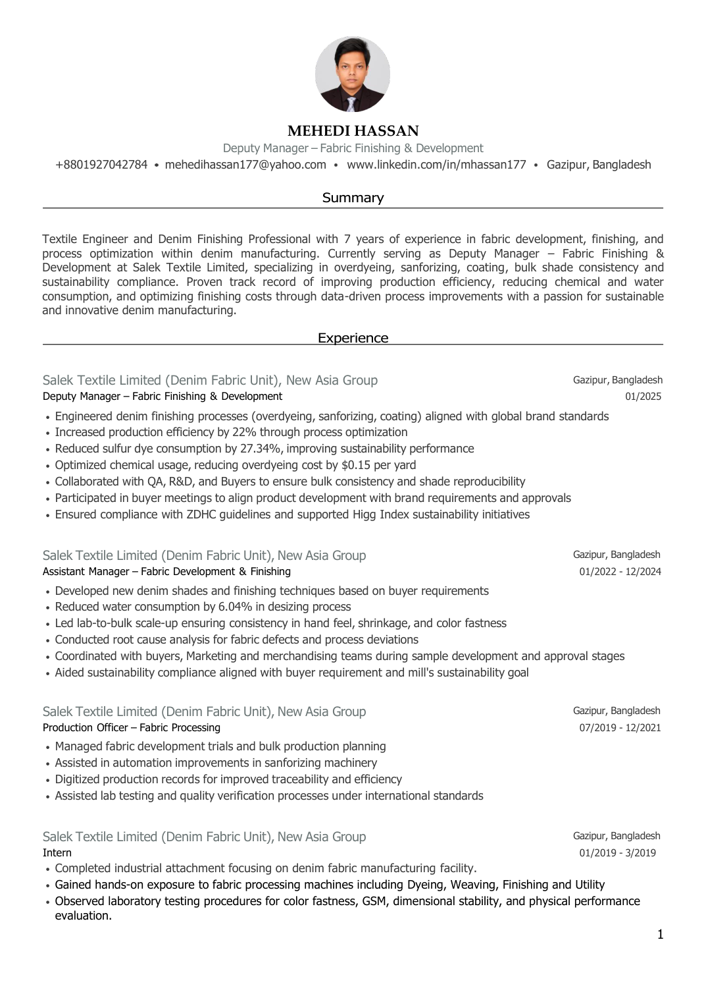
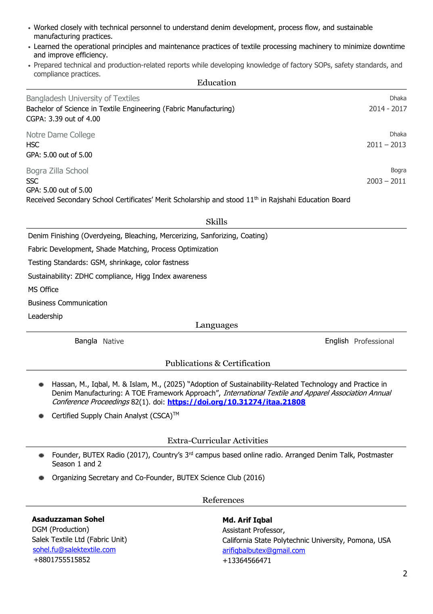

Textile Engineer and Denim Finishing Professional with experience in fabric development, finishing, process optimization and sustainability-focused manufacturing.
Use the viewer below to read the current CV online, or download the original PDF for applications, networking and academic correspondence.
Deputy Manager — Fabric Finishing & Development
Salek Textile Limited · Denim Fabric Unit, New Asia Group
Sustainable textile manufacturing, sustainable denim, technology adoption, resource efficiency and process optimization.
B.Sc. in Textile Engineering (Fabric Manufacturing), Bangladesh University of Textiles · CGPA 3.39/4.00
“Adoption of Sustainability-Related Technology and Practice in Denim Manufacturing: A TOE Framework Approach” · ITAA Proceedings, 2025.

